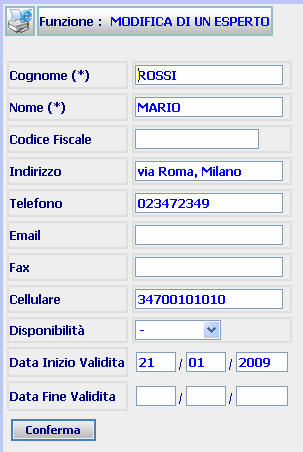

GENERALITA'
MODIFICA ESPERTO: La funzione consente di modificare i dati di un Esperto in carico all'ufficio, introdotti precedentemente con la funzione Inserimento Esperto.
LE MASCHERE VIDEO
La funzione in esame viene realizzata attraverso l'utilizzo della seguente maschera che riporta gli elementi descrittivi e operativi dei dati dell'Esperto:

COME FARE PER ...
| Per modificare i dati di un Esperto l'utente deve: |
Posizionarsi sulla scheda di Modifica;
Introdurre e/o modificare i campi interessati;
Confermare i dati inseriti e/o modificati nella maschera agendo sul bottone
. A fronte di questa operazione i dati vengono inseriti nel sistema e viene visualizzata la scheda del Dettaglio Esperto.
CAMPI
I dati che possono essere modificati sono i seguenti:
| NOME | DESCRIZIONE |
| Cognome | Campo attraverso il quale è possibile modificare il cognome dell'Esperto |
| Nome | Campo attraverso il quale è possibile modificare il nome dell'Esperto |
| Codice fiscale | Campo nel quale può essere inserito/modificato il codice fiscale |
| Indirizzo | Campo nel quale può essere inserito/modificato l'indirizzo |
| Telefono | Campo nel quale può essere inserito/modificato il numero di telefono |
| Campo nel quale può essere inserito l'indirizzo di posta elettronica | |
| Cellulare | Campo nel quale può essere inserito il numero di telefono cellulare |
| Disponibilità | Campo attraverso il quale può essere indicata, attraverso l'apposita tendina, l'attuale stato di disponibilità dell'esperto |
| Data Inizio validità | Compilare il campo data nel formato gg/mm/aaaa. |
| Data Fine Validità | Compilare il campo data nel formato gg/mm/aaaa. |
PULSANTI
E' presente solo il pulsante
 di stampa del contesto (videata)
di stampa del contesto (videata)
BOTTONI
Oltre ai comandi funzionali relativi al menù verticale sono presenti i seguenti comandi:
|
COMANDI |
DESCRIZIONE |
|
|
A fronte di tale comando, il sistema dopo aver verificato la validità dei dati specificati, inserisce i dati nel sistema e viene visualizzata la scheda del Dettaglio Esperto. |
CONTROLLI
A fronte
della pressione del bottone
 , il sistema
verifica la correttezza dei dati e visualizza un messaggio di errore nel caso che
il
formato della
DATA INIZIO VALIDITA' e DATA FINE VALIDITA' non sia corretto.
, il sistema
verifica la correttezza dei dati e visualizza un messaggio di errore nel caso che
il
formato della
DATA INIZIO VALIDITA' e DATA FINE VALIDITA' non sia corretto.
Se il sistema non riscontrerà errori verrà visualizzata la maschera del Dettaglio Esperto